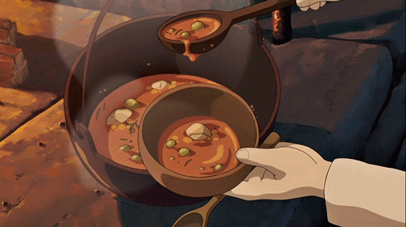

Tenar's Stew From Tales From Earthsea
Go back

Description
Mysterious Tenar's Stew is finally ready to be served on your table! Try this amazing recipe from Alaurei and imagine yourself sitting next to a campfire in a medieval fantasy world full of great adventures.
Ingredients
- 1 lb - 1.5 lbs Beef Stew meat
- 1 - 2 Cups Beef Broth
- 1 can/bottle dark beer
- 1 - 2 Cups red wine
- 1 8oz can tomato paste
- Garlic (to taste)
- Peas
- 1 Onion (diced)
- 2 - 3 Carrots (diced or sliced)
- 2 - 3 Russet Potatoes (cubed)
- Fresh Thyme
- Fresh Rosemary
- Salt
- Pepper
- Paprika
- 5 Tablespoons of all purpose flour
- Olive Oil
Steps
- Prepare all of your veggies:
- Peel your carrots and potatoes.
- Cube the potatoes, dice the carrots, and dice the onion.
-
Prepare your beef:
-
Add cubed stew meat into a bowl and add: salt, pepper, paprika, and flour to the bowl. Mix thoroughly and let sit.
-
In a large pot, add 2 tablespoons of olive oil and the seasoned meat. Place the heat on high, and sear the meat on all sides. Remove the meat from the pot and let rest on a plate.
-
In the same large pot, add 2 more tablespoons of olive oil along with the diced onion and place on high heat. Begin to brown the onions. Once they reach a translucent/clear color, add the garlic and turn the heat to low.
-
Add the can or bottle of a dark beer, and turn the heat back up to high. Use the liquid to scrape the bottom of the pan to pick up any burnt/well-done pieces.
-
Once the beer begins to boil, add the rest of the veggies (carrots, potatoes, and peas) along with the wine and tomato paste.
-
Turn the heat to a medium to medium high, and add the stew meat. Add the beef broth until the ingredients are covered (you can continue to add more stock depending on how thick/thin you like your stew).
- Add herbs to taste.
-
Let the stew simmer for 40-60 minutes or until all ingredients are tender.
-
Serve immediately or freeze for up to a week.
All credits go to Alaurei from Cooking with Ghibli.